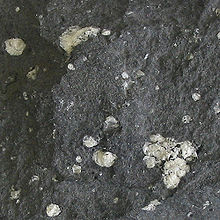
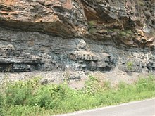
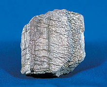

Types Of Rocks
This is a Resource Web Page about rocks.
Learn more about rocks at this Link
There are three types of rocks.
The three types of rocks are
Igneous Rocks
Igneous rock (derived from the Latin word ignis meaning fire), or magmatic rock, is one of the three main rock types, the others being sedimentary and metamorphic. Igneous rock is formed through the cooling and solidification of magma or lava.

Sedimentary Rocks
Sedimentary rocks are types of rock that are formed by the accumulation or deposition of mineral or organic particles at Earth's surface, followed by cementation. Sedimentation is the collective name for processes that cause these particles to settle in place.

Metamorphic Rocks
Metamorphic rocks arise from the transformation of existing rock to new types of rock in a process called metamorphism (transformation of existing rock to rock with a different mineral composition or texture.).

"Works Cited"
“List of Rock Types.” Edited by Wikipedia The free encyclopedia,
Wikipedia, Wikimedia Foundation, 7 Dec. 2022,
ttps://en.wikipedia.org/wiki/List_of_rock_types.